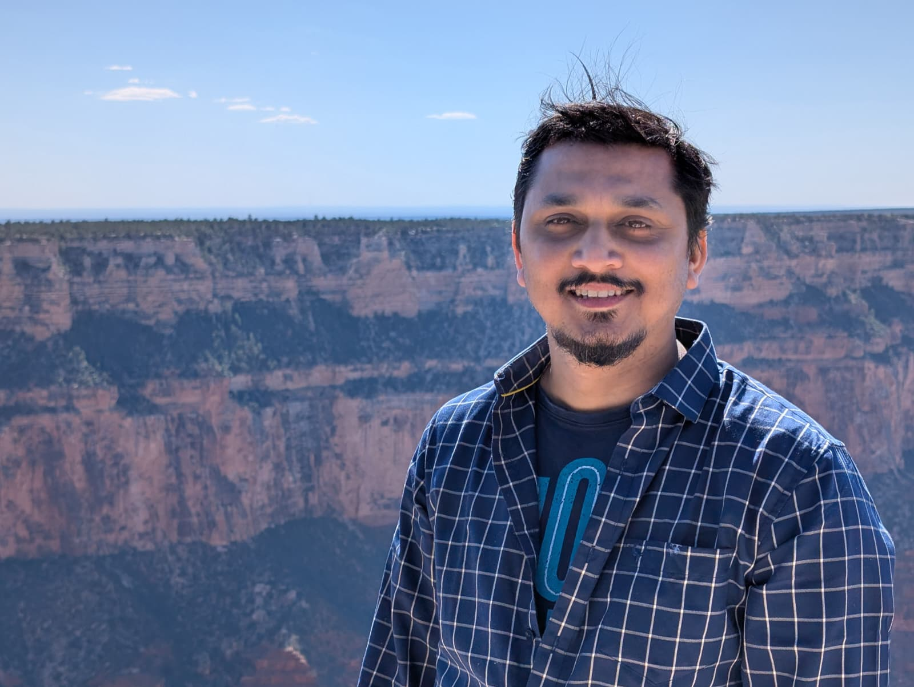

Led by Deb Sankar Banerjee · Assistant Professor
Department of Chemical and Biological Sciences, S. N. Bose National Centre for Basic Sciences (current postdoc)
We study the physics of living matter systems — how non-equilibrium forces and molecular interactions give rise to hierarchical self-organization, adaptive mechanics, and emergent information processing in biological systems. From cytoskeletal networks to biomolecular condensates to physical learning in tissues, we seek the universal organizing principles of soft adaptive matter.

How do microscopic kinetic rules governing filament assembly generate macroscopic morphologies and emergent mechanical response?
Explore →How does the non-equilibrium mechanical environment fundamentally alter condensate nucleation, growth, coarsening, and spatial positioning?
Explore →Does continual structural turnover and non-equilibrium driving fundamentally alter what physical systems — without neurons — can learn?
Explore →